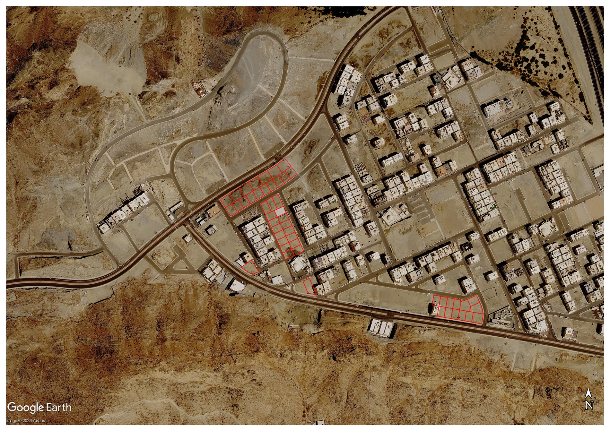
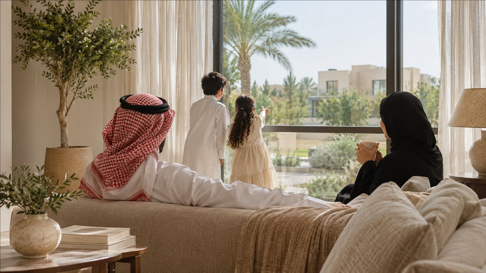
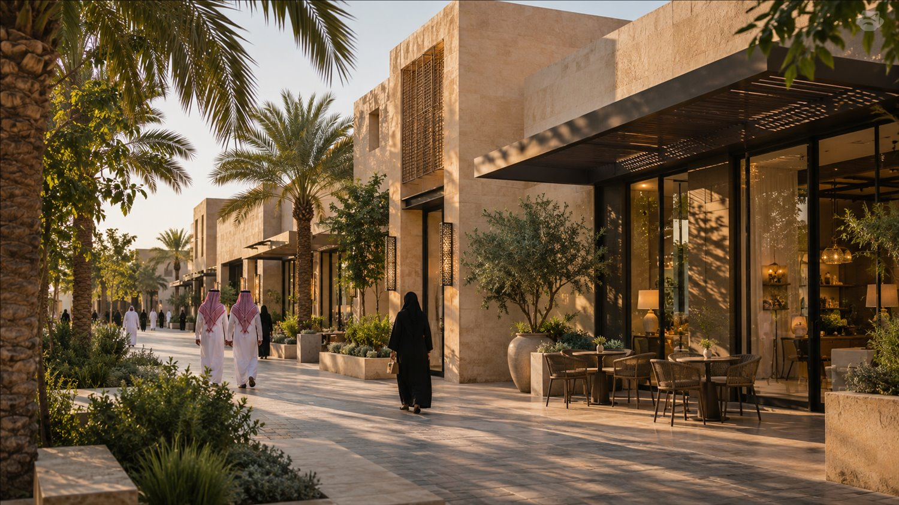
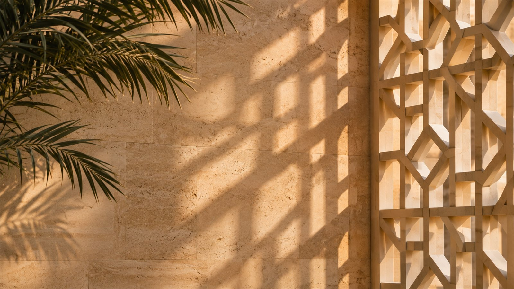

مساكن الريان مكة المكرمة · سكني وتجاري
من الأرض…
تبدأ الحكاية
مساحة تحمل إمكانات الحياة والعمل، وتترك لك رسم خطوتك القادمة.
47 قطعة.
احتمالات تتجاوز المساحة.
مخطط سكني وتجاري في مكة المكرمة، يعرض بيانات القطع كما وردت في ملف المشروع.

في مكة المكرمة.
صورة جوية مرجعية من ملفات المشروع. لا تعرض الصفحة إحداثيات أو مسارات أو أزمنة تنقّل غير موثقة.

LOCATION REFERENCE
اختر قطعة.
اكتشف تفاصيلها.
ابحث في سجل التقييم المعتمد. خريطة القطع الحالية مرجع بصري أصلي؛ مطابقة كل رقم بحدوده الهندسية لم تُعتمد بعد.
حدود القطع التفاعلية قيد التحققتفاصيل القطعة
سجل التقييم المعتمد
التقييمات تقديرية معتمدة وفق الجدول، وليست أسعار بيع حالية. حالة التوفر تحتاج إلى تأكيد.
اختيار القطعة على الخريطة ينتظر مطابقة رقمها وحدودها رسمياً.
المساحة نفسها، وتطلعات مختلفة.


مرئيات توضيحية · ليست مباني قائمة ضمن المشروعLAND / POSSIBILITY
مساحة تنمو
معها الحياة
قطع سكنية / ظهير تجاري · 32 قطعة
فرصة تنمو
مع رؤيتك
أراضٍ مصنفة تجارية · 15 قطعة
إجمالي القيمة التقديرية المعتمدة للمخطط
77.1 مليون ر.سإجمالي تقديري معتمد وفق جدول المشروع، وليس سعر بيع حالي أو عائداً مضموناً.

ثقة وراء المكان
شركة مجموعة الراجحي إخوان
قبل أن تختار،
هذه أهم التفاصيل.
معلومات عملية عن سجل القطع والتقييم والتواصل.
ما الفرق بين رقم الصف ورقم القطعة؟
رقم الصف هو ترتيب السجل في جدول المصدر، أما رقم القطعة فهو الرقم الرسمي المدرج في الجدول. يعرض الموقع الرقمين منفصلين لتسهيل المطابقة.
هل القيمة المعروضة سعر البيع الحالي؟
لا. هي قيمة تقديرية وفق جدول التقييم المرفق، ولا تمثل سعراً حالياً أو ضماناً للعائد أو حالة توفر القطعة.
هل يمكن معرفة مكان القطعة على المخطط؟
ليس بعد. صورة المخطط معروضة كمرجع فقط، ولا يتم تمييز قطعة عليها حتى تتوفر مطابقة هندسية معتمدة بين أرقام القطع وحدودها.
كيف أرسل استفساراً عن قطعة؟
اختر القطعة من سجل المستكشف، وسيظهر رقمها في نموذج التواصل. النموذج حالياً للواجهة فقط ولا يرسل البيانات حتى ربطه بخدمة إرسال. بيانات التواصل مأخوذة من الكتيّب وتحتاج إلى تأكيد.
مساكن الريان · مكة المكرمة
كل مستقبل
يبدأ بمكان.
اختر القطعة التي تناسب رؤيتك، ودعنا نبدأ الحديث.